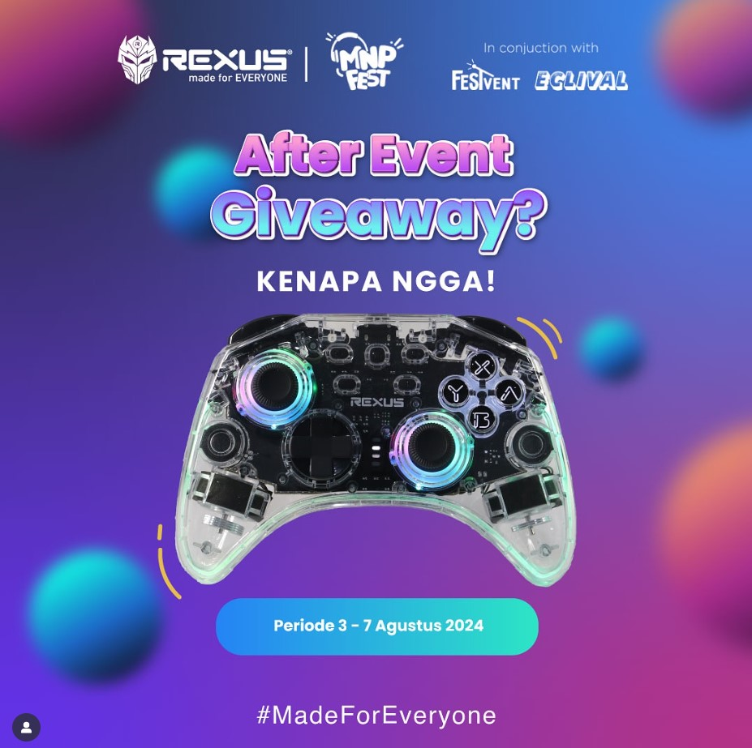
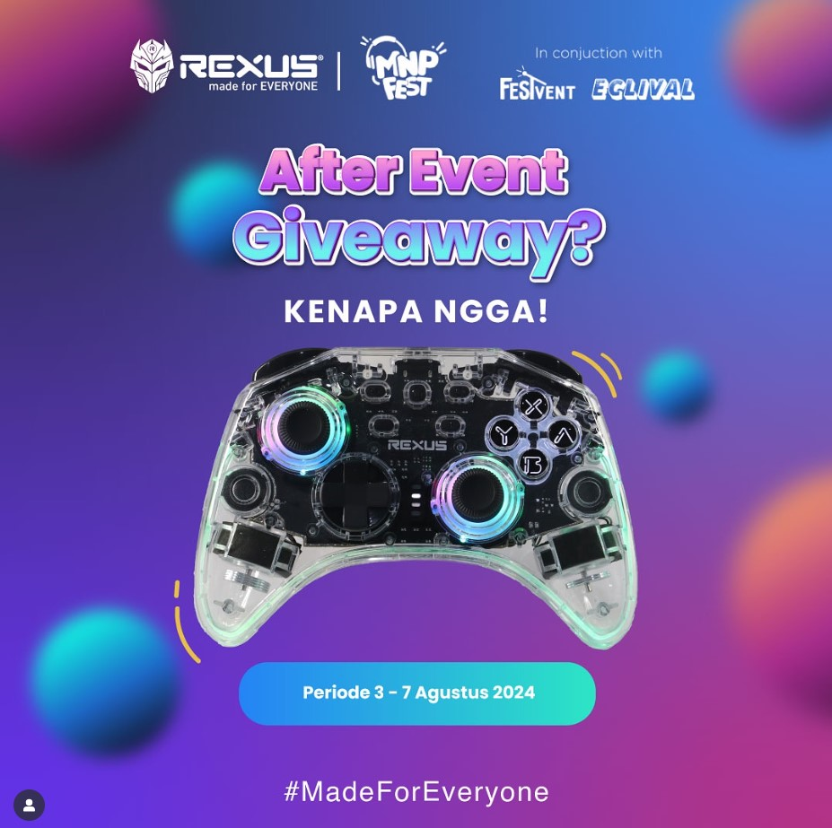

MNP Festival 2024 – Digital Marketing & Content Production
Content Producer & Social Media Manager

MNP Festival 2024 is an annual campus event featuring workshops, competitions, and exhibitions. This project focuses on developing content strategies, boosting awareness, and fulfilling sponsor deliverables through feed content, reels, and dedicated promotional materials.
1. Tools & Technology Used
Instagram (Main platform for event promotion and sponsored content distribution)
Camera / Smartphone (apturing photos and videos for event publications and sponsor use)
Canva (Editing reels and sponsored content videos)
CapCut (Video Editing)
Google Sheets (Content timeline, sponsor deliverables tracking, and planning)
Google Drive (Storing design files, sponsor materials, publication drafts, and documentation assets)
2. Key Results (Production & Performance)
- 96 total contents produced (44 feed posts, 36 reels, 16 sponsored contents)
- Grew Instagram from 0 → 1,010 organic followers
- Achieved a 6–8% engagement rate throughout the campaign
- Reached ~5,000 average views during pre-event week (H-7)
- Managed 5 promotional channels
- Supported 3-day event festival attended by 1,000+ visitors
3. Documentation & Content Visuals
The visual documentation includes event promotional posters, sponsored deliverables, and samples of social media content produced throughout the campaign period.

 
